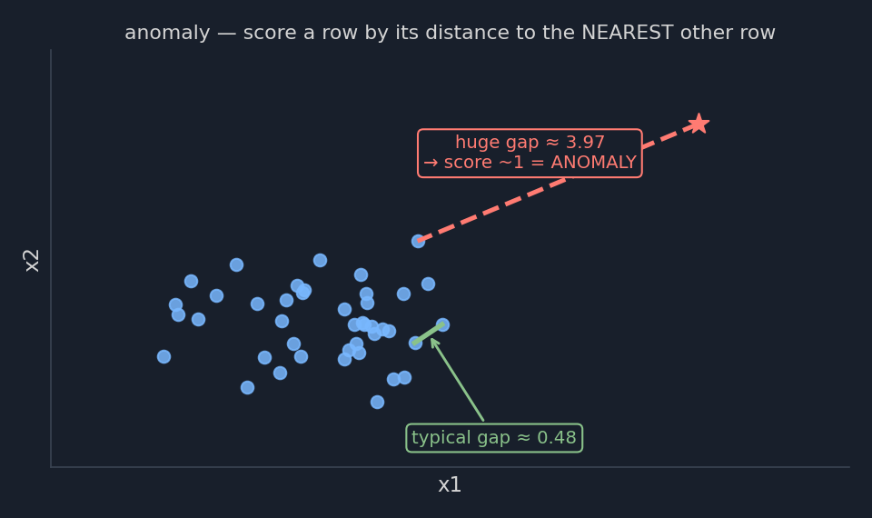
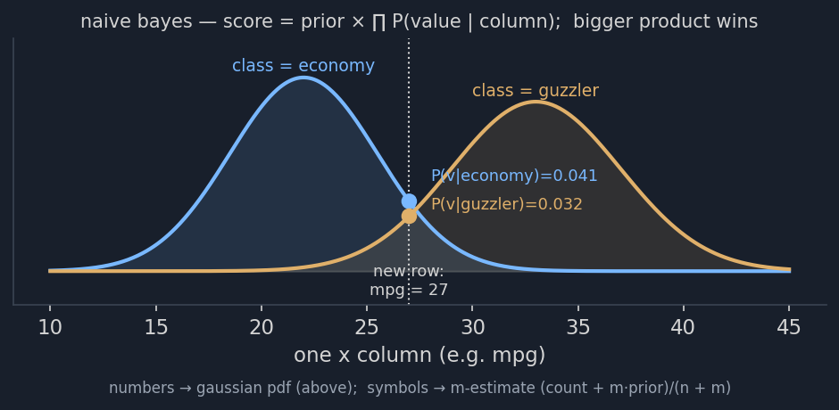
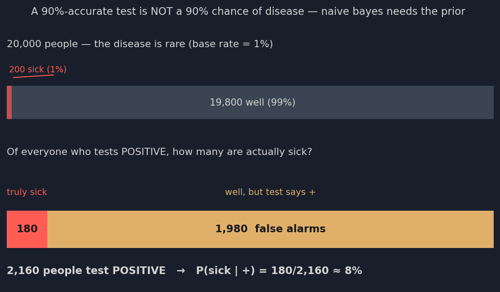
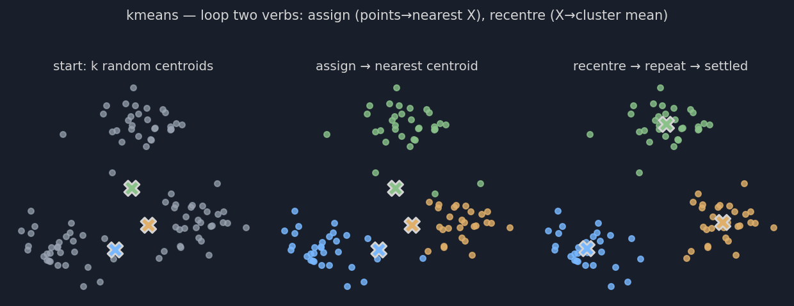
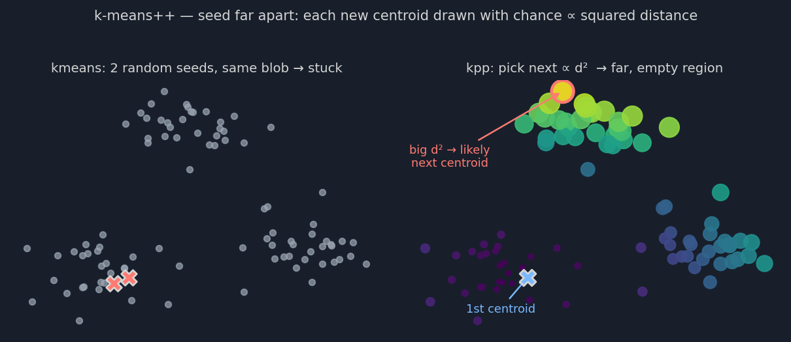

A glossary of tiny lectures, part 7
Week 7: applications
By Tim Menzies, published 2026-10-26, updated 2026-10-26
Summary: Textbooks give a chapter each to prediction, anomaly detection, Bayes classifiers and clustering. This week is the claim that those chapters are synonyms: given distance and column summaries, each one is a dozen lines. Count the new lines per chapter; that falling count is the whole argument of this course, and of the undergraduate project. Demos in ezr-eg7.lua; machinery verbatim from ezr-apps.lua.
One substrate, four chapters
New acronyms: knn, NB (naive Bayes), kpp (k-means++).
-
knn: The Fortune Teller. To guess a row's goals, sort everything by distance to it and average the goals of the nearest the.k. Nothing is fitted; the neighbours ARE the model. It is also the cheapest possible regression — and on auto93 it beats guessing the global mean by about four times.
-- 1. around: sort every row, nearest first (by distance on x)
function TBL.around(i,row,rows)
return keysort(rows or i.rows,
function(r) return i:distx(row, r) end) end
-- 2. knn: NUM of the k nearest y's -- .mu is the point guess
function TBL.knn(i,row,k, t)
t = i:around(row)
return adds(map(slice(t, 1, k or the.k), i:Y())) end
-- 3. call it: nothing is fitted, the data IS the model
t = Tbl(csv(the.file)) -- load auto93.csv
r = t.rows[rand(#t.rows)] -- pick any row
print( t:knn(r).mu ) -- guessed y = mean of k nearest (.sd = spread)
-- auto93: knn err 0.049 vs mean-guess err 0.201 (~4x better) -
anomaly detection: The Bouncer. Loneliness is the whole test: how far is the nearest OTHER row? Score every row that way, normalize to 0..1, and 1 is the loneliest thing in the data. Wrap this around any learner and you have the certification envelope: the guess, plus a red light when the question is unlike anything the model was built from. The same code, pointed at a reference population instead of your own history, is BENCHMARKING — is this car yard near the good cluster, or far from every cluster? (synonyms, again.)
function TBL.anomaly(i, dn,gap)
gap = function(r, lo,d)
lo = 1e32
for _,z in ipairs(i.rows) do
if z ~= r then
d = i:distx(r, z); if d < lo then lo = d end end end
return lo end
dn = Num()
for _,r in ipairs(i.rows) do dn:add(gap(r)) end
return function(r) return dn:norm(gap(r)) end end
-
naive bayes: The ER Nurse: sort arrivals into classes, fast, one row at a time. Each class keeps its own column summaries; the score for a row is the log of the class prior plus the logs of P(value | column), summed over the x columns. "Naive" means the columns are assumed independent — plainly false, and it wins anyway, because a wrong-but-consistent bias still ranks the classes correctly. Note the protocol at work: symbols get an m-estimate, numbers get a gaussian pdf, and like never asks which is which. Three functions stack up: like scores ONE column, likes sums across ALL x columns for one class, mostlikes runs likes for every class and keeps the winner.
-- the whole guess, across every x column, then pick the class:
score(class) = log P(class) + Σc ∈ x-cols log P(row[c] | class)
guess = argmaxclass score(class)-- like: score ONE column (gaussian for nums, m-estimate for syms)
function like(col,v,prior, z)
if not col.mu then
return ((col.has[v] or 0) + the.L*prior)
/ (col.n + the.L) end
z = 2 * col:div()^2 + 1e-32
return exp(-(v - col.mu)^2 / z) / (pi * z)^0.5 end
The picture above is ONE column. likes turns the product into a sum of logs over every x column (logs, so tiny probabilities do not underflow), and mostlikes picks the best-scoring class:-- likes: one class's score = log prior + Σ per-column log-likes
function TBL.likes(h,row,nrows,nh, prior,out,v)
prior = (#h.rows + the.m) / (nrows + the.m*nh)
out = log(prior)
for _,c in ipairs(h.cols.x) do -- across ALL x columns
v = row[c.at]
if v ~= "?" then
v = like(c, v, prior)
if v > 0 then out = out + log(v) end end end
return out end
-- mostlikes: run likes for every class, return the winner
function mostlikes(h,row,nrows,nh, best,bs,s)
bs = -1e32
for k,hk in pairs(h) do
s = hk:likes(row, nrows, nh)
if s > bs then bs, best = s, k end end
return best end
That `log(prior)` on the first line of likes is not decoration — it is the base rate, and dropping it is the most famous mistake in probability. A test that is 90% accurate for a disease 1% of people have does NOT make a positive result 90% likely to be real: the few true positives are swamped by false positives from the huge healthy group, so the honest answer is about 8%.
NB only gets this right because likes starts from the prior. The rig is test-then-train: every row is GUESSED before it is learned, so the accuracy needs no held-out split and the model is always as current as the last row seen.function TBL.classify(i,wait, at,h,seen,nh,want)
wait, at = wait or the.wait, i.cols.klass.at
h, seen, nh = {}, {}, 0
for j,row in ipairs(i.rows) do
want = row[at]
if j >= wait and nh > 0 then
push(seen, {mostlikes(h, row, #i.rows, nh), want}) end
if not h[want] then h[want] = i:clone(); nh = nh + 1 end
h[want]:add(row) end
return seen end -
kmeans: The Curator, textbook edition: pick k centroids, assign every row to its nearest, move each centroid to the middle of what it caught, repeat. Compare with week 3's node: kmeans needs k, needs a full pass per iteration, and needs a distance to every centroid — while node splits on two rows and gives you an index for free. Both cluster; they do not cost the same.
-- assign: drop every row into the cluster of its nearest centroid
function assign(i,cents, out)
out = map(cents, function() return i:clone() end)
for _,r in ipairs(i.rows) do
out[nearest(i, cents, r)]:add(r) end
return out end
-- recentre: new centroid = the middle (mids) of each cluster
function recentre(clusters, cents)
cents = {}
for _,c in ipairs(clusters) do
if #c.rows > 0 then push(cents, c:mids()) end end
return cents end
-- kmeans: seed k centroids, then loop assign/recentre
function TBL.kmeans(i,k,iter, cents)
cents = some(i.rows, k or the.kluster)
for _ = 1, iter or the.iter do
cents = recentre(assign(i, cents)) end
return assign(i, cents) end
The two verbs are the whole algorithm: assign reads the centroids, recentre rewrites them. Loop until they stop moving. -
kpp: k-means++: start the centroids far apart, or kmeans starts in a corner and stays there. Each new centre is drawn with a chance proportional to its SQUARED distance from the centres chosen so far — random, but biased toward the empty regions. Week 3's poles made the same bet with two rows and no randomness.
-- d2: squared distance from r to its NEAREST chosen centroid
function d2(i,cents,r, lo,d)
lo = 1e32
for _,c in ipairs(cents) do
d = i:distx(r, c); lo = min(lo, d*d) end
return lo end
-- wpick: roulette wheel -- index j with chance ws[j] / sum(ws)
function wpick(ws, all,r,c)
all = sum(ws, function(w) return w end)
r, c = rand() * all, 0
for j,w in ipairs(ws) do
c = c + w
if r <= c then return j end end
return #ws end
-- kpp: 1st centroid random; each next is a d2-weighted pick
function TBL.kpp(i,k, cents,pool,ws)
cents = {some(i.rows, 1)[1]}
while #cents < (k or the.kluster) do
pool = some(i.rows, min(the.few, #i.rows)) -- a small random pool
ws = map(pool, function(r) return d2(i, cents, r) end) -- weight = d2
push(cents, pool[wpick(ws)]) end -- favour the far ones
return cents end
So d2 scores each candidate, wpick rolls a biased die over those scores, and kpp repeats until it has k well-spread seeds — the same far-apart bet week 3's two poles made without any randomness.Aha, Kibler & Albert: Instance-based learning algorithms. David W. Aha, Dennis Kibler, Marc K. Albert. Machine Learning 6, 1991, 37-66.Domingos & Pazzani: On the optimality of the simple Bayesian classifier under zero-one loss. Pedro Domingos, Michael Pazzani. Machine Learning 29, 1997, 103-130.Arthur & Vassilvitskii: k-means++: The advantages of careful seeding. David Arthur, Sergei Vassilvitskii. SODA 2007, 1027-1035.